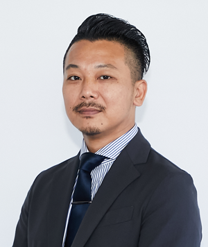
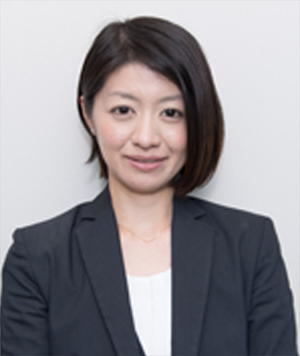
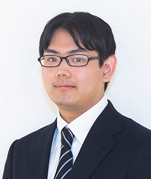
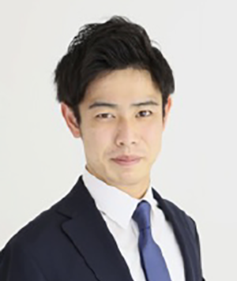

ご相談のお申込み
ご案内メールへのご返信で「相談希望」とご返信ください。
ご希望の候補日を2〜3つお知らせいただければ、こちらから日程をご連絡します。
参加者限定｜課題解消ミーティングのご案内
このたびは「動物病院 2027 時流予測セミナー」にご参加いただき、誠にありがとうございました。
ご参加いただいた院長先生への特典として、無料の課題解消ミーティングをご用意しています。
業界全体の年齢構成の変化を踏まえて自院の来院動向を把握し、強みや特徴を活かした集患策を組み立てる。
飼主様への「教育」を通じて信頼を育てる。診療圏の特性に合わせて、届け方を変える。
病気のときだけ頼られる病院から、予防や日々の健康管理まで相談される病院へ。来院のたびに信頼を積み重ね、生涯にわたって選ばれ続ける関係をつくる。
転職を考え始める前の段階から情報を届け、価値観の合う人材と出会う。
院長先生がひとりで抱え込む経営から、チームで動く経営へ。
セミナーでお伝えした内容は、どれも一度に取り組めるものではありません。
大切なのは、自院の状況に合わせて優先順位をつけ、最初の一歩を踏み出すことです。
こんな病院を目指しませんか。
学んだ内容を自院に落とし込む段階で、多くの院長先生が同じ壁にぶつかります。
課題解消ミーティングは、その「落とし込み」を一緒に行う場です。
| 所要時間 | 1〜2時間程度 |
|---|---|
| 形式 | 貴院への訪問、またはオンライン |
| 費用 | 無料（セミナー参加者特典） |
| 内容 | ディスカッションを通じて、貴院の経営課題を整理します |
| その他 | セミナーで触れられなかった内容や、他院の取り組み事例もご紹介できます |
※相談したいことが決まっていなくても大丈夫です。お話を伺いながら一緒に整理します。
ご案内メールに「相談希望」とご返信ください。
メールで日程調整をさせていただきます。
ディスカッションしながら、貴院の課題を整理します。
課題解消ミーティングは、原則として本セミナーの講師4名のいずれかが担当します。
セミナーでお話しした内容を踏まえ、貴院の状況に合わせてご相談に応じます。

2004年より船井総合研究所にて動物病院向けコンサルティングを開始し、2011年に株式会社サスティナを現代表と共に創業。動物病院コンサル歴は23年目。売上3,000万円〜数十億円規模まで幅広い動物病院を支援し、近年は事業承継・M&Aにおける売り手・買い手双方のアドバイザーも務める。

医療機関で1日約180名を担当する医療コンシェルジュとして、受付から会計、レセプト点検までを経験。接遇・ホスピタリティを軸にしたサービス設計、スタッフ間の情報共有を促す職場づくり、新人の接遇教育を支援している。

医療業界を中心とした自社メディアで広告営業を経験し、集客課題の聞き取りと解決策の提案に携わった後、経営支援へ。動物病院のマーケティング支援を担当し、データと事実に基づく論理的なアプローチを重視している。

臨床検査薬メーカーを経て2021年に入社。動物病院の収支・財務面の把握や理念の浸透などの経営サポートと、求職者情報に基づく採用支援を担当。理念（ロマン）と財務（ソロバン）の両立を重視している。
※ご希望の日程によっては、株式会社サスティナの別のコンサルタントが担当する場合があります。あらかじめご了承ください。
ご案内メールへのご返信で「相談希望」とご返信ください。
ご希望の候補日を2〜3つお知らせいただければ、こちらから日程をご連絡します。